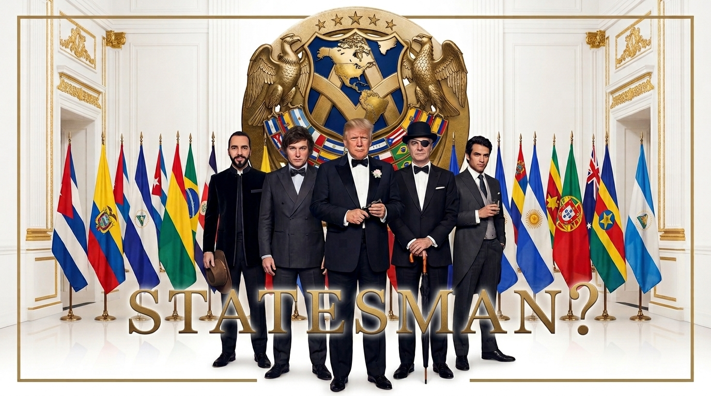

Soberanía · Geopolítica · Seguridad
← Volver a Columnas
La trilogía del patio trasero
La banalización de la soberanía: el Escudo de las Américas, el soft law, los minerales críticos y el TIAR sobre suelo mapuche.
Jorge Oyarce Kruger
Septiembre 2026

Colin Firth lleva dos décadas interpretando a hombres que creen saber más que todos. En Kingsman era Harry Hart, el espía gentleman que operaba desde una sastrería porque el MI6 era demasiado burocrático para salvar al mundo. En Disclosure Day, la última de Spielberg, es Noah Scanlon, CEO de Wardex, una corporación que lleva décadas ocultando la existencia de vida extraterrestre porque informar a los presidentes es un riesgo: son temporales, son políticos, son poco confiables. Hay verdades demasiado importantes como para dejarlas en manos de la democracia.
En Kingsman la gracia era que Firth era el bueno. Salvaba al mundo precisamente porque no le rendía cuentas a nadie. En Disclosure Day, Spielberg invierte la fórmula y muestra la otra cara: cuando nadie rinde cuentas, Wardex termina torturando seres en un sótano. Misma lógica, distinto resultado. La diferencia nunca estuvo en la intención, sino en quién tiene el poder y qué hace cuando nadie lo mira.
El 22 de septiembre de 2026, mientras Spielberg llenaba salas con esa reflexión, algo parecido ocurría fuera de la ficción. En una reunión al margen de la Asamblea General de Naciones Unidas, el presidente José Antonio Kast formalizó la adhesión de Chile al Escudo de las Américas, una coalición de quince países impulsada por Donald Trump para combatir el crimen organizado transnacional. La decisión se tomó sin consulta previa al Congreso. Los parlamentarios se enteraron por la prensa. Cancillería emitió un comunicado breve. El documento completo lo publicó el Departamento de Estado de Estados Unidos.
"Aquí no hay un tratado, para que nadie diga que estamos pasando a llevar la soberanía o la institucionalidad del país."
José Antonio Kast, 22 de septiembre de 2026
Tiene razón formal. Y en esa formalidad reside toda la trampa.
El artículo 54 Nº 1 de la Constitución establece que es atribución exclusiva del Congreso Nacional aprobar o desechar los tratados internacionales que le presente el Presidente de la República antes de su ratificación. La aprobación de un tratado se somete a los trámites de una ley. El artículo 32 Nº 15 complementa: el Presidente puede negociar, concluir y firmar tratados, pero estos deben ser sometidos a la aprobación del Congreso. El mismo artículo 54 Nº 1 introduce un matiz: las medidas que el Presidente adopte o los acuerdos que celebre para el cumplimiento de un tratado en vigor no requerirán nueva aprobación del Congreso, a menos que se trate de materias propias de ley. Todo esto existe para una sola cosa: que los compromisos internacionales del Estado pasen por el filtro democrático.
Lo que Chile firmó el 22 de septiembre se llama "Declaración Conjunta sobre la Defensa de la Soberanía Hemisférica". No es un tratado. Es lo que en derecho internacional se conoce como soft law: una declaración de intenciones que formalmente no vincula, pero que genera compromisos políticos de difícil reversión. Su documento fundacional, la Declaración de Seguridad Conjunta del 5 de marzo, es un texto de una página sin personal permanente, sin mecanismo de defensa colectiva, sin reglas que sobrevivan un cambio de gobierno.
Pero las intenciones declaradas son las de un tratado de defensa colectiva. Los quince firmantes, Estados Unidos, Argentina, Bolivia, Chile, Colombia, Costa Rica, República Dominicana, Ecuador, El Salvador, Guyana, Honduras, Panamá, Paraguay, Perú y Trinidad y Tobago, declaran su intención de imponer congelamiento de activos, restricciones migratorias y de visado, y responsabilidad penal para quienes proporcionen apoyo material a 24 organizaciones calificadas como narcoterroristas. Declaran su intención de solicitar al Consejo Permanente de la OEA la convocatoria de un Órgano de Consulta bajo los artículos 6 y 13 del Tratado Interamericano de Asistencia Recíproca, el TIAR, para adoptar una resolución que facilite la "acción colectiva" contra esas organizaciones. Comprometen posiciones sobre inversión extranjera, minerales críticos, infraestructura digital y coordinación multilateral.
Decir que esto no es un tratado es como decir que un compromiso de convivencia con régimen de bienes compartidos, hijos en común y cláusula de fidelidad no es un matrimonio. Técnicamente correcto. Sustancialmente absurdo.
La estructura formal se articula en tres pilares. El primero es económico: mecanismos de filtrado de inversiones, protección de cadenas de suministro de minerales críticos mediante diversificación de fuentes, regulación de proveedores confiables en infraestructura digital. El segundo es de seguridad: coordinación de sanciones, designaciones y acciones financieras contra "narcoterroristas", expansión de la aplicación de la ley civil, asistencia humanitaria y de comunicaciones. El tercero es de coordinación multilateral: uso de foros multilaterales para coordinar posiciones comunes, incluido catalizar acciones internacionales contra el crimen organizado y "perseguir reformas necesarias en organizaciones multilaterales". Operativamente, el Escudo funciona como el foro de jefes de Estado, mientras que la Coalición Anticárteles de las Américas, conocida como A3C, es el brazo operacional.
Ahora bien, hay algo peor que la forma: lo que no sabemos sobre el fondo.
El documento que publicó el Departamento de Estado contiene elementos que jamás aparecieron en el comunicado de Cancillería. Las referencias al TIAR, el pilar económico sobre minerales críticos, el filtrado de inversiones extranjeras: nada de eso figuró en la versión chilena. Consultado sobre las omisiones, el gobierno respondió que "el objetivo del comunicado era informar la adhesión". Los senadores socialistas lo dijeron sin anestesia: "Hasta hace semanas, el propio gobierno señalaba que Chile no formaba parte de esta iniciativa y que sus alcances no estaban definidos. Hoy se anuncia la adhesión sin que el país conozca qué cambió, qué se acordó y qué compromisos se asumieron."
Lo que esto significa es binario y ambas opciones son graves. O Kast sabía exactamente lo que firmaba y Cancillería deliberadamente ocultó la mitad del contenido al informar al país, lo que es ocultamiento. O Kast adhirió a un marco cuyos términos definitivos se redactaron en Washington sin que Chile controlara el texto final, lo que es negligencia. No hay tercera lectura. Gonzalo Winter lo resumió con precisión: "El documento fundador de este escudo no es público."
Y conviene detenerse en a quién se le entregó ese cheque en blanco. Trump enfrenta probabilidades reales de impeachment. Ya lleva una campaña militar con drones contra narcolanchas en el Caribe con más de doscientos muertos. El mismo día que Kast firmaba la adhesión sentado a su lado, Trump declaró ante la Asamblea General: "De ser necesario, utilizaremos nuestro poderío militar sin igual." Y remató: "Estados Unidos ya no permitirá que las amenazas contra América ganen terreno en ningún lugar del hemisferio occidental." Los cárteles, dijo, son "el Estado Islámico de América Latina".
Un lobo con rabia al que se le firmó un cheque en blanco sobre la política de seguridad, la política comercial y la doctrina de defensa del país. Los lobos con rabia no distinguen entre presa y aliado. Y los cheques en blanco no se devuelven: se cobran.
No es solo Wardex la ficción que ilumina lo que ocurre. En Kingsman, una agencia privada opera fuera del MI6 porque la burocracia estorba. En Special Ops: Lioness, la serie de Taylor Sheridan, la CIA tiene un programa que funciona al borde del margen institucional: misiones que oficialmente no existen, operativas que no son agentes, denegación plausible si algo sale mal. Como al MI6 es Kingsman, a la CIA es Lioness: un programa que opera al borde de la institucionalidad porque la institucionalidad es demasiado lenta para la urgencia que alguien decidió que existía. Distinta fachada, misma convicción: las reglas son para quienes no entienden la gravedad de la amenaza.
En el tercer episodio de la tercera temporada de Lioness, una agente ucraniana explica la nueva guerra fría con tres animales. El oso es Estados Unidos: finge ser guardabosque mientras marca territorio. El lobo es Rusia: perdió la manada y pretende la autosuficiencia del tigre sin tenerla, con una guerra activa que es cláusula rota de su propio contrato social. El tigre es China: caza solo, sostiene un pacto material con su pueblo que los otros dos ya no pueden pagar, con una trayectoria donde el pobre chino vive objetivamente mejor que hace treinta años.
Esa taxonomía, que es ficción estadounidense y por lo tanto producto del oso, resulta brutalmente útil para leer lo que nadie miró en el Escudo de las Américas.
Toda la cobertura mediática se centró en el narcotráfico y en las 24 organizaciones listadas. Es comprensible: el Tren de Aragua, el Cártel de Sinaloa, el CJNG, la MS-13, Los Choneros, Los Lobos, el Comando Vermelho, el PCC, las disidencias de las FARC, el ELN, Sendero Luminoso son nombres que generan titulares. Pero el pilar económico de la declaración compromete a Chile en algo mucho más profundo que la persecución de bandas criminales.
El documento habla de "mecanismos de filtrado de inversiones", de "cadenas de suministro de minerales críticos mediante fuentes diversificadas y confiables", de "regulación de proveedores confiables en infraestructura digital aplicada sobre una base no discriminatoria". Nunca se nombra a China. Cada línea apunta a China.
Chile es el mayor productor de cobre del mundo y uno de los principales productores de litio. China es el principal socio comercial de Chile. Adherir a un esquema que define como objetivo estratégico la diversificación de fuentes de minerales críticos y la regulación de proveedores de infraestructura digital, bajo el paraguas de lo que la propia Casa Blanca denomina "Doctrina Donroe", una actualización explícita de la Doctrina Monroe orientada a contener la influencia de China, Rusia e Irán en el hemisferio, es tomar posición en la disputa geopolítica entre Washington y Beijing sobre quién controla las cadenas de suministro del siglo XXI.
Y esto no llega al vacío. En abril, Chile ya había firmado un memorando bilateral con Estados Unidos sobre cadenas de suministro para minería y procesamiento de minerales críticos y tierras raras. El Escudo multilateraliza ese compromiso previo y lo viste de seguridad hemisférica. Lo que era un acuerdo bilateral entre dos países se convierte en una posición colectiva de quince naciones, con el peso político que eso implica.
El oso te pide que elijas entre él y el tigre. Pero el tigre te compra el cobre y el litio, y el oso te cobra los aranceles de castigo más altos de la región. Como lo dijo Winter con precisión quirúrgica: "Chile se puso detrás del escudo del mismo país que desde julio le cobra el arancel de castigo más alto a nuestras exportaciones."
Y en el mismo Congreso, Winter recordó otro detalle que se perdió en la vorágine: en Panamá, el Secretario de Guerra de Estados Unidos pidió a los países del Escudo salirse de la Corte Penal Internacional. El pilar de "coordinación multilateral" que habla de "perseguir reformas necesarias en organizaciones multilaterales" tiene, entonces, un significado bastante concreto que va más allá de la retórica.
Cualquier naturalista lo sabe: en el bosque boreal, el tigre y el oso coexisten porque ocupan nichos distintos. Cuando el oso decide que el nicho del tigre le pertenece, el bosque se incendia. Y los que viven en ese bosque, los que producen lo que ambos necesitan, son los primeros en quemarse.
La soberanía económica, dicen, se defiende cuando el capital es "transparente y verificable". Suena razonable. Hasta que entiendes que quien define qué capital es transparente y cuál no es el oso, no tú.
En la primera Kingsman, la premisa es que existe una amenaza tan grave que justifica una organización que opera sin control democrático. La ironía del guion es que esa misma organización termina infiltrada por el villano: el mecanismo creado para proteger se convierte en el arma. La herramienta diseñada para la seguridad es exactamente lo que pone en peligro a todos. Nadie sospechó porque el sistema estaba diseñado para confiar en sí mismo.
El TIAR fue creado en 1947, en plena Guerra Fría, bajo el principio de que una amenaza contra un Estado americano puede ser considerada amenaza para todos. Su artículo 6 permite convocar al Órgano de Consulta cuando la soberanía o la independencia política de cualquier Estado se vean afectadas por "cualquier situación que ponga en peligro la paz del continente". Su artículo 8 permite acordar medidas que van desde la ruptura de relaciones diplomáticas hasta el uso de la fuerza armada. Su artículo 13 establece el procedimiento para convocar al órgano. Y su artículo 20 establece que ningún Estado puede ser obligado a emplear fuerza sin su consentimiento.
Lo que el Escudo de las Américas está haciendo es un cambio conceptual de fondo: el crimen organizado deja de ser un fenómeno policial y judicial para incorporarse al sistema hemisférico de seguridad colectiva. Los cárteles ya no son un problema de policía: son una amenaza existencial al hemisferio que justifica la activación de un tratado de defensa militar colectiva. Trump lo dijo sin matices ante la Asamblea General: "Los cárteles son el Estado Islámico de América Latina." Una vez que defines al enemigo como existencial, todo se justifica.
El precedente ya existe y no es abstracto. Ecuador consintió, y la operación conjunta con Estados Unidos contra disidencias de las FARC en territorio ecuatoriano ya ocurrió bajo este mismo paraguas. No fue teoría: fue fuego real. El Pentágono ya lleva a cabo una campaña con drones y ataques aéreos contra narcolanchas en el Caribe y el Pacífico, con más de doscientos muertos.
Ahora trasládalo a Chile.
Kast como candidato hablaba de la Araucanía como zona de conflicto armado con componentes terroristas. Como presidente ha impulsado diecinueve proyectos de ley en materia de seguridad, incluida una reforma constitucional presentada en el Senado en agosto. El lenguaje de "narcoterrorismo" que emplea el Escudo calza como guante con el discurso que su gobierno ha sostenido sobre la Macrozona Sur. La declaración que firmó compromete a los países a "facilitar acceso a tecnologías y capacidades de seguridad", a "promover entrenamiento y desarrollo profesional de recursos humanos", y a "utilizar todo recurso necesario y toda autoridad legalmente disponible".
El escenario que debería quitar el sueño no es el de marines en Temuco. Es más sutil y más probable. Basta con que algún grupo operando en la zona, la CAM, la Resistencia Mapuche Lafkenche, o cualquier estructura que el gobierno vincule al narcotráfico, fuera calificado como organización narcoterrorista con alcance transnacional. Basta con que Chile solicitara "cooperación" bajo el paraguas del Escudo: inteligencia, tecnología de vigilancia, asesoría militar, capacitación. La declaración no habla de intervención armada: habla de "facilitar acceso a tecnologías y capacidades de seguridad". Drones, asesores, bases de datos compartidas, tecnología de vigilancia. Lo suficiente para que la soberanía sobre el territorio se vuelva ficción operativa.
La distancia entre el Escudo de las Américas y una operación de "asistencia" en suelo mapuche no es una barrera legal. Es una decisión política. Y el andamiaje para que esa decisión sea posible se acaba de firmar sin que ningún parlamentario chileno votara por ello.
Los mismos que llevan años invocando la soberanía para cerrar fronteras a la inmigración venezolana, para rechazar el Pacto Migratorio de la ONU, para cuestionar la jurisdicción de la Corte Penal Internacional, acaban de firmar un documento que compromete la política comercial, la doctrina de seguridad y la posición geopolítica de Chile en un almuerzo de trabajo en el complejo hotelero de Donald Trump, sin pasar por el Congreso.
La soberanía les importa cuando sirve para levantar muros. No cuando se trata de preguntar qué estamos firmando.
Noah Scanlon, el Wardex de Colin Firth, operaba con una convicción simple: hay verdades demasiado importantes para la democracia. Los presidentes son temporales, los parlamentos hacen preguntas incómodas, los ciudadanos se asustan. Mejor decidir por ellos. Mejor firmar en silencio. Mejor que se enteren después.
En Kingsman, el villano usó la infraestructura de seguridad para activar su propio plan. Nadie sospechó porque el sistema estaba diseñado para confiar en sí mismo. Eso es lo que hace el soft law: entra sin que lo veas, se instala sin que lo votes, y cuando quieres revertirlo el precedente ya está puesto.
Spielberg tuvo la elegancia de convertir eso en ficción. Nosotros tenemos la desgracia de verlo convertido en política exterior.
La banalización de la soberanía, le dicen en los salones. En la calle tiene otro nombre.
Jorge Oyarce Kruger — Dirección GH HCAI Lab, Valdivia, Región de Los Ríos.